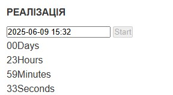

ТЕМА:
АСИНХРОННІСТЬ. ПРОМІСИ. HTTP-ЗАПИТИ. REST API. AJAX. КРОС-ДОМЕННІ ЗАПИТИ.
МЕТА:
Придбати навички роботи з промісами, Fetch API та AJAX для взаємодії з публічними REST API.
ПОСИЛАННЯ:
ЗАВДАННЯ №1: Таймер зворотного відліку
- Підключені бібліотеки flatpickr та iziToast
- Start неактивна до вибору майбутньої дати
- Вибір дати з минулого — повідомлення “Please choose a date in the future”
- Після вибору майбутньої дати — Start активується
- При натисканні Start — інпут і кнопка блокуються, починається відлік у форматі xx:xx:xx:xx
Реалізація
00Days
00Hours
00Minutes
00Seconds
Демонстрація

ЗАВДАННЯ №2: Генератор промісів
- Форма з полем delay (ms) та state = fulfilled/rejected
- Після сабміту створюється проміс із заданою затримкою
- Результат — iziToast-сповіщення про fulfilled або rejected
Реалізація
Демонстрація

ЗАВДАННЯ №3: Пошук зображень по Pixabay API
- Форма з полем query і кнопкою Search
- Запит через Fetch до Pixabay (image_type=photo, orientation=horizontal, per_page=12)
- Галерея рендериться динамічно, перед новим пошуком старі очищаються
- SimpleLightbox + iziToast для помилок / сповіщень
Реалізація
Демонстрація